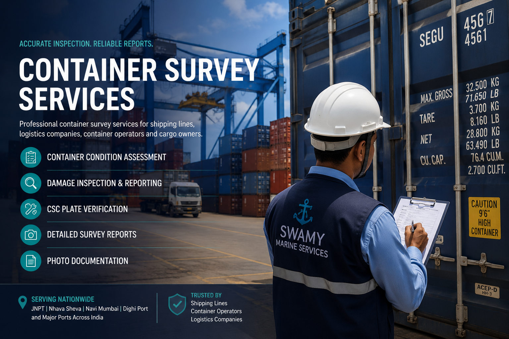

Professional container repair and maintenance support for shipping lines, container operators, depots, logistics companies and cargo owners in Navi Mumbai, JNPT, Nhava Sheva, Dighi Port and across India.
Container Repair
Swamy Marine Services provides container repair and maintenance support to help restore damaged or worn container components. Repair requirements can be identified through inspection and addressed according to the condition and operational requirements of the equipment.
Repair Services
Repair support for visible structural damage and affected container components.
Repair and maintenance support for damaged or deformed side panels.
Maintenance and repair support for visible roof damage and condition issues.
Inspection-led floor repair support for damaged or deteriorated container floors.
Repair support for doors, hinges, locking bars, handles and related components.
Welding and maintenance support for identified container repair requirements.
Repair Workflow
Identify visible damage and affected container components.
Determine the repair requirements based on observed condition.
Carry out applicable repair and maintenance work.
Review repaired areas and document the completed work.
Service Locations
Container repair support
Repair & maintenance support
Container repair services
Container maintenance support
Frequently Asked Questions
Repair support can include structural repairs, side panels, roof, floor, doors, locking gear, welding and related maintenance requirements.
Yes. A detailed inspection can help identify visible damage and areas requiring repair or further assessment.
Swamy Marine Services provides container-related service support in Navi Mumbai, JNPT, Nhava Sheva, Dighi Port and other locations across India.
Container Repair Requirement?
Send the container number, location and photographs or inspection details to our team.
Request Container Repair